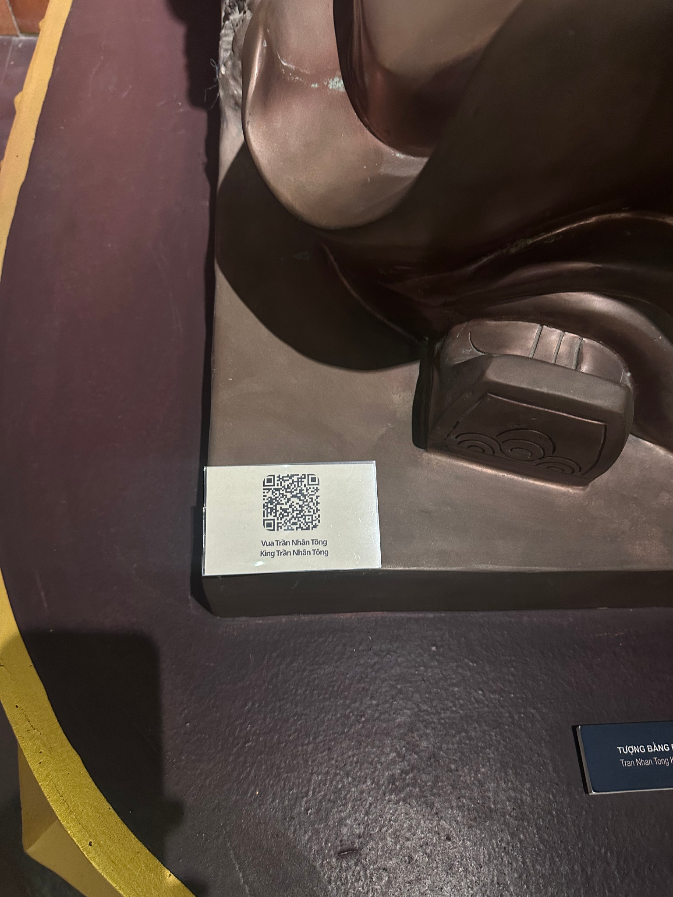
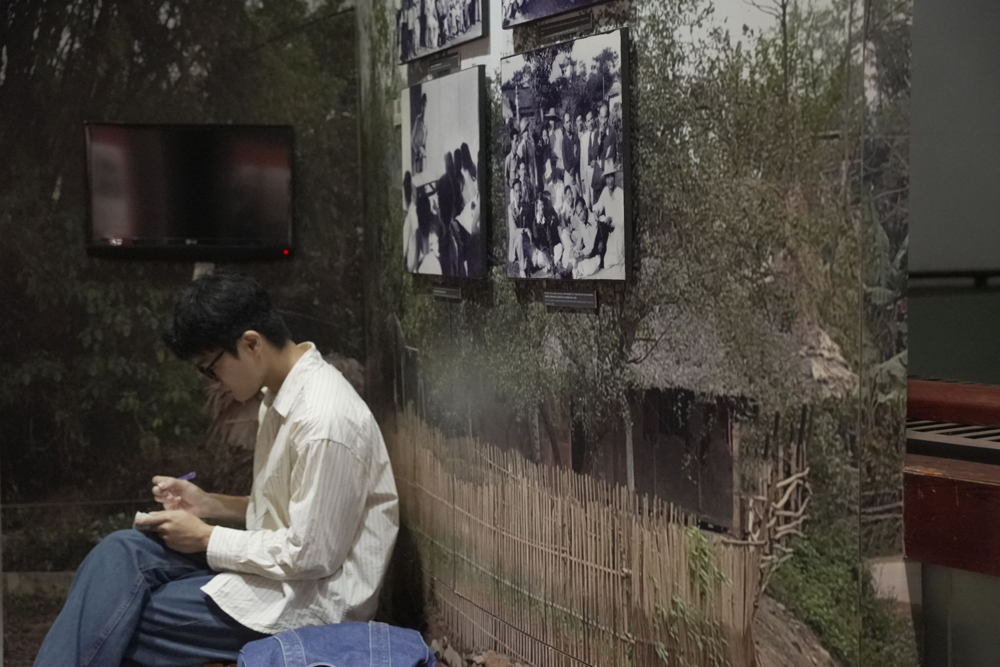

Trong bài
Không chỉ dừng lại ở việc ngắm nhìn hiện vật trong tủ kính hay đọc những dòng giới thiệu trên bảng thông tin, tham quan bảo tàng ngày nay còn có thể trở thành hành trình khám phá đầy sinh động nhờ công nghệ số. Vậy có những trải nghiệm nào đáng thử khi tham quan bảo tàng bằng công nghệ số?
Công nghệ số đang thay đổi trải nghiệm tham quan bảo tàng như thế nào?
Trong hình dung quen thuộc của nhiều người, bảo tàng là nơi lưu giữ những hiện vật có giá trị lịch sử, văn hóa và nghệ thuật. Khách tham quan thường di chuyển qua các khu trưng bày, quan sát hiện vật và tìm hiểu thông tin qua bảng chú thích. Tuy nhiên, sự phát triển của công nghệ số đang mở rộng cách công chúng tiếp cận những không gian văn hóa này.

Thay vì chỉ tiếp nhận thông tin bằng cách đọc và quan sát, khách tham quan có thể sử dụng điện thoại thông minh, máy tính bảng hoặc các thiết bị tương tác để tìm hiểu sâu hơn về hiện vật. Những câu chuyện lịch sử, thông tin về nhân vật, hình ảnh tư liệu và nội dung thuyết minh được thể hiện bằng nhiều hình thức khác nhau, giúp hành trình khám phá trở nên trực quan hơn.
Một trong những giá trị quan trọng của công nghệ số là khả năng bổ sung những thông tin khó thể hiện đầy đủ trong không gian trưng bày thực tế. Chẳng hạn, một hiện vật có kích thước nhỏ nhưng gắn với nhiều sự kiện lịch sử có thể được giới thiệu thêm thông qua hình ảnh, video hoặc dòng thời gian tương tác. Người xem không chỉ biết hiện vật là gì mà còn có cơ hội hiểu được bối cảnh ra đời, quá trình lưu giữ và ý nghĩa của nó.
Đối với bảo tàng văn học, công nghệ số còn tạo điều kiện kết nối hiện vật với những câu chuyện phía sau trang viết. Một bản thảo, bức thư, cuốn sách cũ hay đồ dùng của nhà văn có thể trở nên gần gũi hơn khi được đặt trong mối liên hệ với cuộc đời, sự nghiệp sáng tác và bối cảnh lịch sử của tác giả.
Những trải nghiệm công nghệ số đáng thử khi đến bảo tàng
Khám phá thông tin qua mã QR
Mã QR là một trong những hình thức ứng dụng công nghệ số đơn giản và dễ tiếp cận nhất. Chỉ với điện thoại có kết nối Internet và chức năng quét mã, khách tham quan có thể truy cập trang thông tin liên quan đến hiện vật hoặc khu trưng bày, nếu bảo tàng cung cấp dịch vụ này.

So với bảng giới thiệu truyền thống, nội dung trực tuyến có thể được mở rộng bằng hình ảnh, video, tài liệu tham khảo và những câu chuyện bổ sung. Người xem cũng có thể lưu lại đường dẫn để tiếp tục tìm hiểu sau chuyến tham quan.
Khi sử dụng mã QR, bạn nên đọc thông tin giới thiệu ban đầu, sau đó lựa chọn những nội dung thực sự liên quan đến điều mình quan tâm. Nếu gặp một bản thảo văn học, chẳng hạn, hãy tìm hiểu thêm về tác giả, thời điểm sáng tác, hoàn cảnh ra đời và vị trí của tác phẩm trong sự nghiệp của người viết.
Để việc khám phá hiệu quả hơn, bạn có thể ghi lại một vài thông tin nổi bật thay vì cố gắng đọc toàn bộ nội dung. Cách tiếp cận này giúp chuyến tham quan không bị gián đoạn bởi việc liên tục sử dụng điện thoại.
Xem video và hình ảnh tư liệu
Có những câu chuyện khó truyền tải trọn vẹn chỉ bằng vài dòng chú thích. Video và hình ảnh tư liệu có thể giúp người xem hình dung rõ hơn về một giai đoạn lịch sử, cuộc đời nhân vật hoặc quá trình hình thành của một tác phẩm.

Tại các không gian trưng bày văn học, hình ảnh chân dung nhà văn, tư liệu về nơi ở, bản thảo, thư từ hoặc những đoạn phim ghi lại hoạt động sáng tác có thể bổ sung nhiều thông tin cho khách tham quan. Khi được lựa chọn và trình bày phù hợp, các tư liệu này tạo nên sự kết nối giữa hiện vật đang được trưng bày với câu chuyện rộng lớn hơn của văn học và đời sống.
Nếu bảo tàng có màn hình trình chiếu hoặc cung cấp video qua nền tảng trực tuyến, bạn nên dành thời gian theo dõi những nội dung gắn trực tiếp với khu vực đang tham quan. Sau khi xem, hãy thử đối chiếu thông tin trong video với hiện vật thực tế. Bạn có thể nhận ra những chi tiết mà ban đầu mình chưa chú ý hoặc hiểu rõ hơn vì sao hiện vật được lưu giữ.
Làm thế nào để tận dụng công nghệ số mà không bỏ lỡ giá trị của hiện vật?
Dù có nhiều tiện ích, công nghệ số chỉ phát huy hiệu quả khi được sử dụng đúng cách. Nếu dành quá nhiều thời gian nhìn vào màn hình, khách tham quan có thể bỏ qua những chi tiết đặc biệt của hiện vật thật hoặc không gian trưng bày.
Trong quá trình tham quan, hãy ưu tiên quan sát hiện vật trước. Chú ý đến hình dáng, chất liệu, kích thước, chữ viết hoặc những dấu vết đặc biệt trên bề mặt. Sau đó, sử dụng các công cụ công nghệ số để kiểm chứng và bổ sung thông tin. Cách tiếp cận này giúp bạn chủ động đặt câu hỏi và hiểu rõ hơn những gì đang quan sát.
Bạn cũng nên kiểm tra nguồn thông tin khi truy cập nội dung bên ngoài. Ưu tiên website chính thức của bảo tàng, cơ quan văn hóa, thư viện, cơ sở nghiên cứu hoặc các nguồn có thông tin tác giả và xuất xứ rõ ràng. Không nên mặc nhiên coi mọi nội dung xuất hiện trên mạng là chính xác, đặc biệt khi thông tin liên quan đến lịch sử, tác giả và tác phẩm.
Công nghệ số đang mang đến nhiều cách khám phá bảo tàng linh hoạt và sinh động hơn. Dù vậy, trải nghiệm đáng nhớ nhất vẫn bắt đầu từ sự quan sát, tò mò và mong muốn tìm hiểu những câu chuyện phía sau mỗi hiện vật. Khi kết hợp hài hòa giữa công nghệ và trải nghiệm trực tiếp, mỗi chuyến tham quan sẽ trở thành cơ hội để tiếp cận di sản sâu sắc hơn.
Bảo tàng Văn học Việt Nam